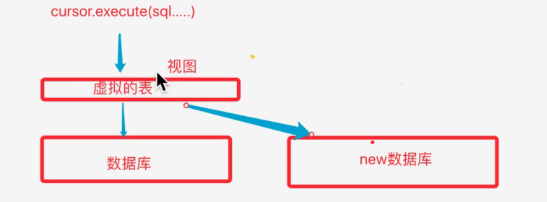

1.视图
视图就是一条SELECT语句执行后返回的结果集，所以我们在创建视图的时候，主要工作就落在创建这条SQL查询语句上
视图对若干张基本表的引用，一张虚表，查询语句执行的结果，不存储具体的数据（基本表数据发生了改变，视图也跟着改变）
方便操作，特别是查询操作，减少复杂的SQL语句，增强可读性

定义视图
目的：方便查数据，不能修改
建议以v...开头
create view 视图名称 as select语句
#三张表连接
create view v_goods_info as select g.*,c.name as cate_name,b.name as brand_name
from goods as g left join goods_cates as c on
g.cate_id=c.id left join goods_brands as b on
g.brand_id=b.id;
查看视图
select * from v_goods_info
删除视图
drop view 视图名
视图的作用
提高了重用性，就像一个函数一样
对数据库重构，却不影响程序的运行
提高了安全性能，可以对不同的用户
让数据更加清晰
2.事务（增删改有用）
所谓事务，就是一个操作序列，这些操作要么都执行，要么都不执行，它是一个不可分割的工作单位。
事务的四大特性（ACID）
原子性
一个事务被视为一个不可分割的最小工作单元，整个事务中的所有操作要么全部提交成功，
要么全部失败回滚，对于一个事务来说，不可能只执行其中一部分操作。
一致性
就算中间出了问题，数据还是不会变
隔离性
一个事务所在的修改在最终提交以前，对其他的事务是不可见的。
共同对同一个数据操作，一个事务什么时候执行完，其它事务才能执行。
持久性
一旦事务提交，其所做的修改会永久的保存到数据库
可以用start transaction 语句开始一个事务，然后要么使用commit提交将修改的数据持久保存，
要么使用rollback撤销所有的修改。如下：
1.start transaction; 或 begin;
2.select balance from checking where customer_id = 10233276;
3.updata checking set balance = balance-200.00 where customer_id=10233275;
4.updata saving set balance=balance+200.00 where customer_id=10233275;
5.commit;
用python默认就是一个事务
用MySQL客户端也是默认的，每条语句自动执行start transaction、commit
3.索引
索引是一种特殊的文件，他们包含着对数据表里所有记录的引用指针。
更通俗的说，数据库索引好比一本书的目录，能加快数据库的查询速度
目的：提高查询的效率
原理：通过不断地缩小想要获得数据的范围筛选出最终想要的结果
主键和外键都是索引
开启运行时间检测：
查找第1万条数据
select * from test_index where title="ha---9999"
查看执行时间
为表的字段创建索引
create index 索引名 on 表(字段（10）);#如果字段是是字符串类型，要写数据的长度
执行查询语句
select * from test_index where title='ha-9999';
再次查看执行的时间
查看索引